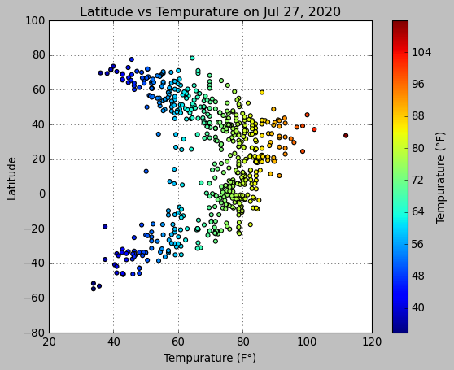

Overview

The purpose of the Weather Visualization project was to analyze how your position on Earth affected the temperature you experience. We gathered our data on 550 cities using the OpenWeatherMap API. Visit OpenWeatherMap to learn more about how their API works.
We used the Python packages Matplotlib and Pandas to look at various aspects of the weather against latitude. Our four factors were as follows: Temperature, Cloudiness, Wind Speed, and Humidity. On this site you can find source data and explanations of our findings. See below for images of our visualizations, and be sure to click the images for a link to deep dives. Enjoy!